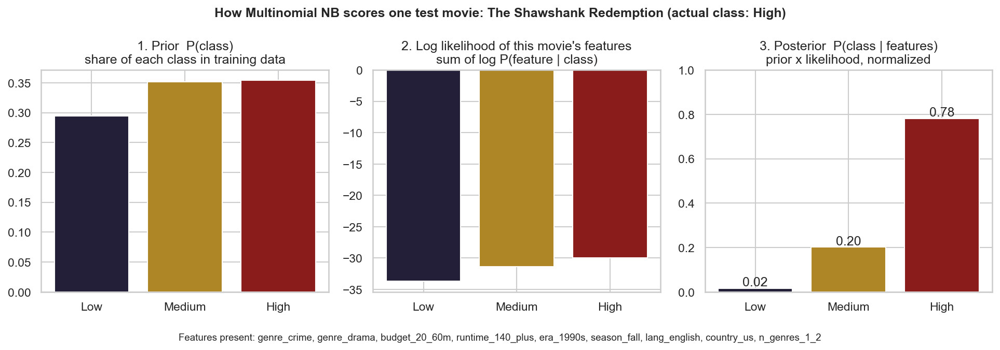
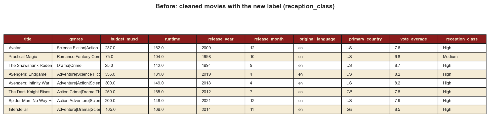
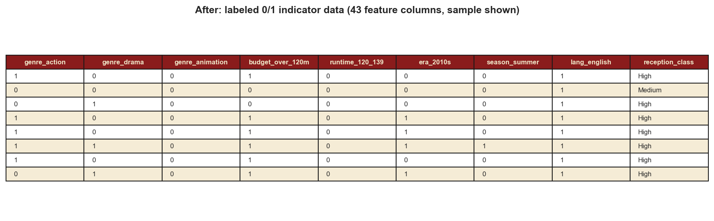
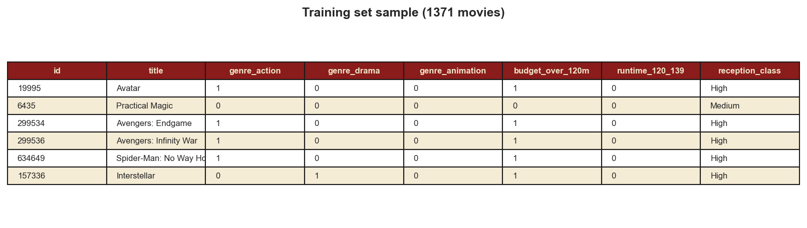
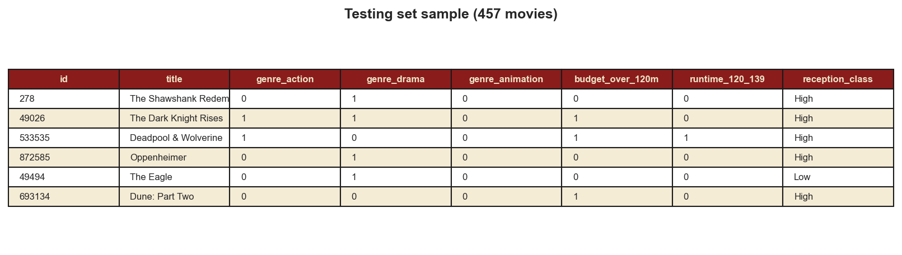
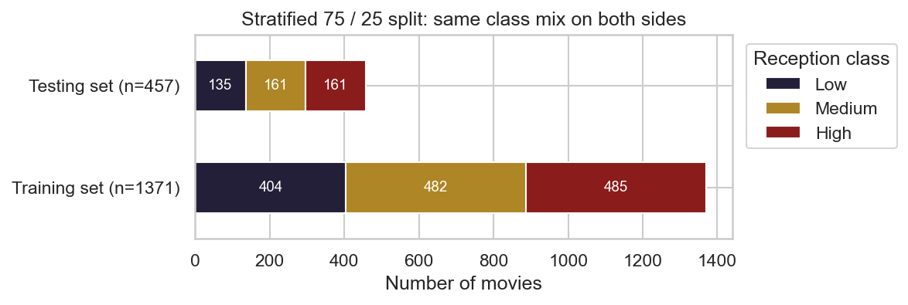
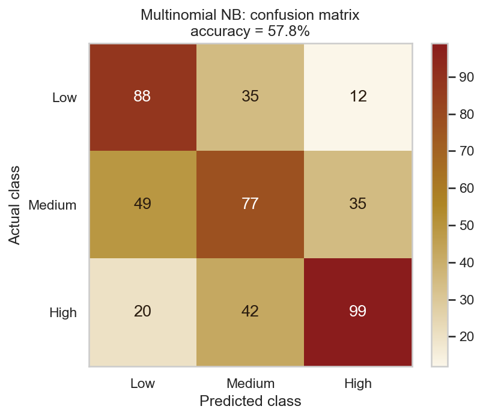
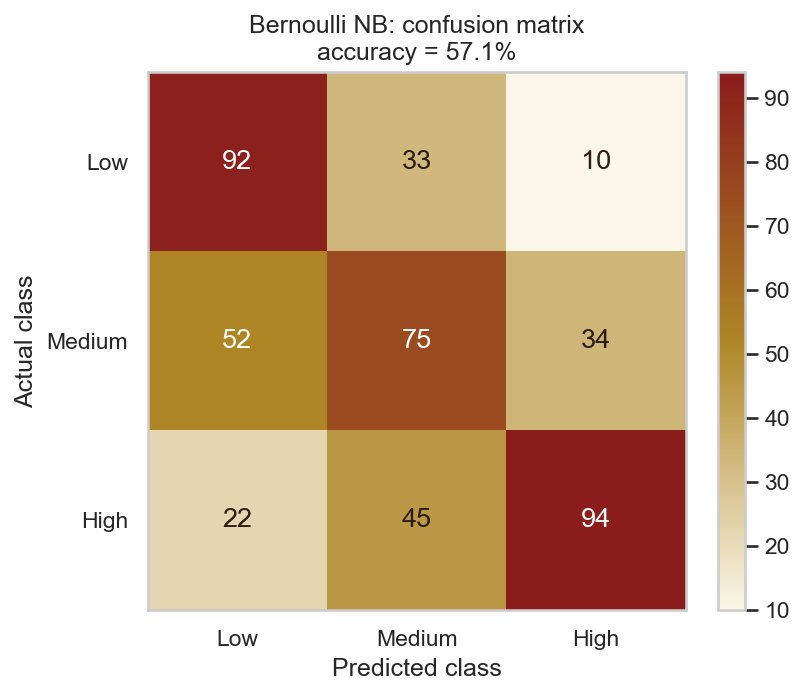
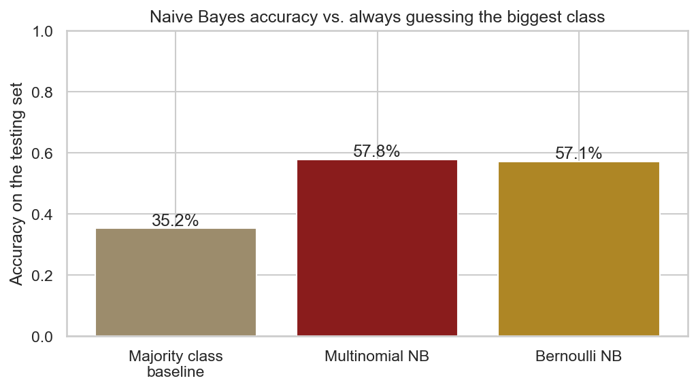
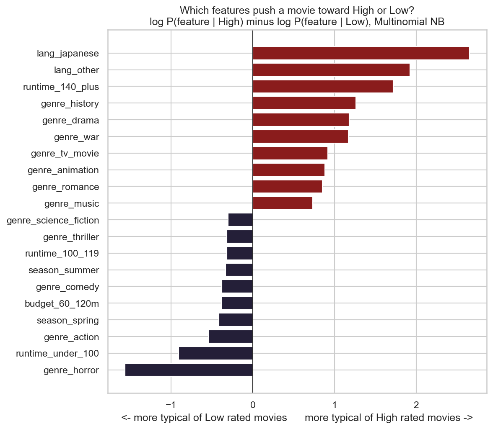

Naive Bayes
Overview
Naive Bayes is a supervised learning method for classification. You give it examples that already have a label, it learns from them, and then it guesses the label for new examples it has never seen. It's built on Bayes' theorem, which flips a probability around. Instead of asking "how likely are these features if the movie is highly rated", it lets you ask the question you actually care about: "how likely is this movie to be highly rated, given its features?"
In symbols, the model scores each class C like this:
P(C | x1, ..., xn) ∝ P(C) × P(x1 | C) × ... × P(xn | C).
P(C) is the prior, which is just how common that class is in
the training data. Each P(xi | C) is a likelihood,
meaning how often that feature shows up inside that class. Multiply them together, compare
the classes, and the biggest one wins. That final number is the posterior.
The "naive" part is a big shortcut. The model assumes every feature is independent of the others once you know the class. That's almost never true in real life. A war movie is obviously more likely to also be a history movie. But the shortcut makes the math very cheap, and in practice Naive Bayes still works surprisingly well. It trains in one pass over the data and needs very little tuning.
One more detail matters. If a feature never appears with a class in the training data, its probability would be zero, and that one zero would wipe out the whole product. To stop that, we use Laplace smoothing, which adds a small count (here, 1) to everything so no probability is ever exactly zero.
What it's used for
Naive Bayes is a classic for text. Spam filters, sentiment analysis, sorting news articles by topic and tagging support tickets all use it. It's also handy as a quick baseline model for any classification problem, medical screening, and recommendation systems, since it's fast and easy to explain. In this project I use it to predict how well audiences will rate a movie from things a studio already knows before release.
Two common versions
- Multinomial Naive Bayes is the standard one we covered in class. It expects counts, like how many times each word shows up in a document. The likelihood of a feature is based on how often it occurs in that class compared to all features in that class. The inputs have to be non negative numbers, so text gets turned into word counts and categories get turned into 0/1 indicator columns.
- Bernoulli Naive Bayes only cares whether each feature is present or absent, so every input is treated as yes or no. The big difference is that Bernoulli also learns from what's missing. If "horror" is absent, that counts as evidence too, while Multinomial simply ignores features with a zero. Bernoulli tends to suit short documents or any data that's naturally binary.
There's also Gaussian Naive Bayes, which assumes each numeric feature follows a bell curve inside each class. I didn't need it here because all my features are 0/1 indicators. Since my data is binary, I ran Bernoulli alongside Multinomial to compare the two.

Data Prep
Naive Bayes is supervised, so the first thing it needs is labeled data. Every movie needs a known answer for the model to learn from. Unlabeled data, like what I used for clustering, can't be used here because there's nothing to check the guesses against.
Making the label
I created a label called reception_class from each movie's average TMDB rating:
- Low: rating of 6.5 or below (539 movies)
- Medium: above 6.5 and up to 7.2 (643 movies)
- High: above 7.2 (646 movies)
I picked these cut points because they split the data into three groups of similar size. I
didn't use the older rating_tier column because its "Poor" group only has 13
movies, which is way too few to learn from.
Choosing features without cheating
I only used things a studio knows before a movie comes out: genres, budget, runtime, release era, release season, original language, production country and how many genres it has. I left out vote count, popularity and revenue on purpose. Those are measured after release, and they'd sneak information about the answer into the model. That's called data leakage, and it makes a model look far better than it really is.
Turning everything into counts
I used sklearn's MultinomialNB, which only accepts non negative numbers. So
every feature became a 0/1 indicator column. Genres were already lists, so each genre got its
own column, and a movie can have several 1s there. Numeric fields like budget and runtime
were sorted into bands (for example, budget under $20M, $20 to 60M, $60 to 120M, over
$120M), and each band became a column. I used fixed cut points instead of percentiles of the
full dataset so that nothing about the testing set leaked into how I coded the training set.
I also dropped 172 movies with no budget listed. That left 1,828 labeled movies with
43 indicator columns.


Training set and testing set
Next I split the labeled data into two parts. The training set is what the
model learns from. The testing set is held back and only used at the end to
see how well the model does on movies it has never seen. I used sklearn's
train_test_split to put 75% of the movies (1,371) in training and 25% (457) in
testing. I made it stratified, so each side has the same mix of Low, Medium and High,
and I fixed the random seed so the split is the same every time. The Decision Trees tab uses
this exact same split, so the two models are tested on the exact same movies.
The two sets must be disjoint, meaning no movie can be in both. If a movie was in the training set and also showed up in testing, the model would basically be taking a test it already saw the answers to. The accuracy would look great but it wouldn't tell you anything about how the model handles new movies, which is the whole point. I checked this in the code and the overlap is zero.



Code
Everything is in Python using sklearn (MultinomialNB, BernoulliNB,
train_test_split and the metrics module), pandas and
matplotlib. The label and the train/test split live in a small shared file so
the Naive Bayes and Decision Tree code use exactly the same movies.
The core of it:
train_ids, test_ids = train_test_split(df["id"], test_size=0.25,
stratify=df["reception_class"], random_state=42)
assert set(train_ids).isdisjoint(test_ids)
model = MultinomialNB(alpha=1.0) # alpha = Laplace smoothing
model.fit(X_train, y_train)
pred = model.predict(X_test)
print(accuracy_score(y_test, pred))
print(confusion_matrix(y_test, pred, labels=["Low", "Medium", "High"]))Results
Multinomial Naive Bayes got 57.8% accuracy on the 457 testing movies. Bernoulli was right behind at 57.1%. To know if that's any good, you need something to compare it to. If you just guessed the most common class every time, you'd be right 35.2% of the time. So the model is clearly picking up real patterns, and it's doing it with nothing but genre, budget, runtime, timing and language.
Training accuracy was 55.1%, which is actually a little lower than the testing score. That tells me the model isn't overfitting. It's a simple model and it isn't memorizing anything.



Reading the confusion matrix
The model is best at the two ends. It found 65% of the Low movies and 62% of the High ones. Medium is the hard part, with only 48% found. That makes sense, since a 6.9 movie looks a lot like a 6.4 or a 7.3 on paper. The good news is that the model rarely makes a big mistake. Only 12 Low movies were called High, and only 20 High movies were called Low. That's 32 out of 457, or about 7%. Most of its errors are off by one step, like calling a Medium movie Low.
What the model learned
Because Naive Bayes stores a probability for every feature in every class, you can open it up and see what it thinks. The chart below compares how likely each feature is among High movies against Low movies.

- Pointing to High: a Japanese or other non English original language, a runtime over 140 minutes, and the history, drama, war, animation, romance and music genres.
- Pointing to Low: horror by a wide margin, then runtimes under 100 minutes, action, comedy, a spring or summer release, and a mid level budget of $60 to 120M.
Conclusions
The main takeaway is that you can make a decent guess about how audiences will rate a movie before it's even released. With just genre, length, budget, timing and language, the model was right almost 58% of the time across three classes, where random guessing gets about a third. It almost never mistook a well loved movie for a poorly rated one.
The patterns it found are pretty interesting. Long movies, dramas, history and war films do better with audiences, while short horror films, action films and comedies tend to score lower. Foreign language films, especially Japanese ones, rate very highly in this data. Part of that is probably selection, since only the best foreign films get enough English speaking votes on TMDB to make it into my sample in the first place. Summer and spring releases lean Low, which fits the idea that those seasons are packed with crowd pleasers made for big openings instead of reviews. Fall releases are where you'd expect the award contenders.
There's also a clear limit. The model struggles with the middle. Being "okay" doesn't seem to have a recipe, and a lot of what makes a movie good just isn't in this kind of data: the script, the acting, the direction. So these features can tell you which way a movie is likely leaning, but they won't tell you if it's going to be a classic.